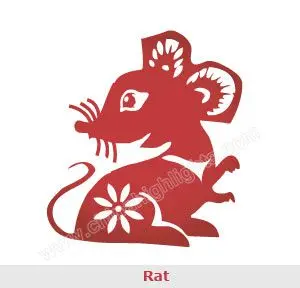

 You are loyal and devoting to your friends and
rather protective of them. You are not really romantic and often just really good
friends with your lover. At times you can be mean, stubborn,
and narrow-minded in your view but it is merely your way of being a perfectionist
and your need to live by own rules.